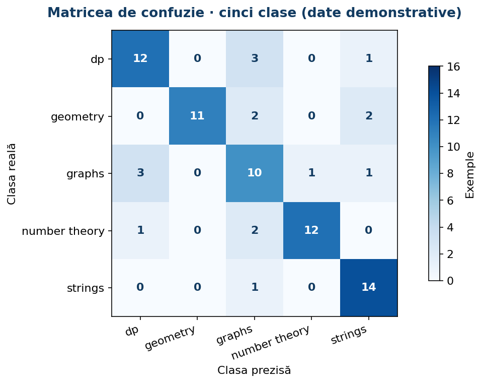
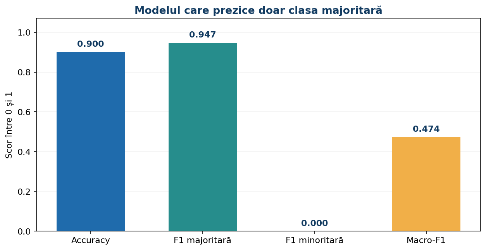
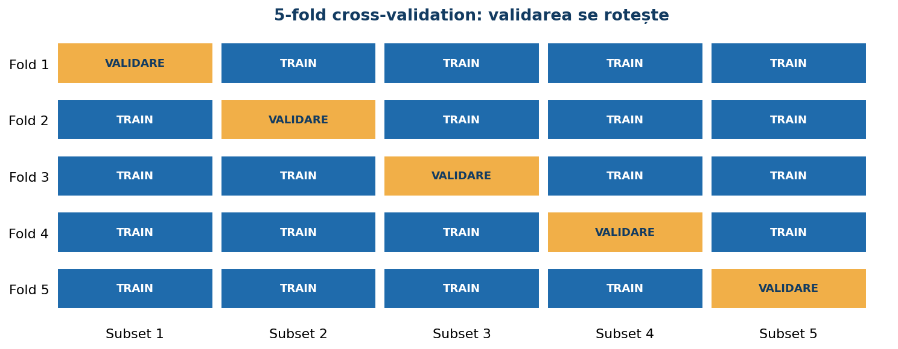
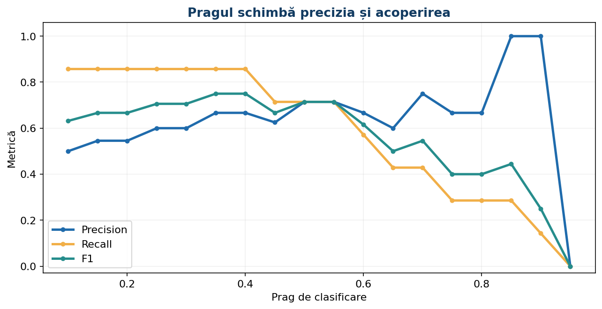
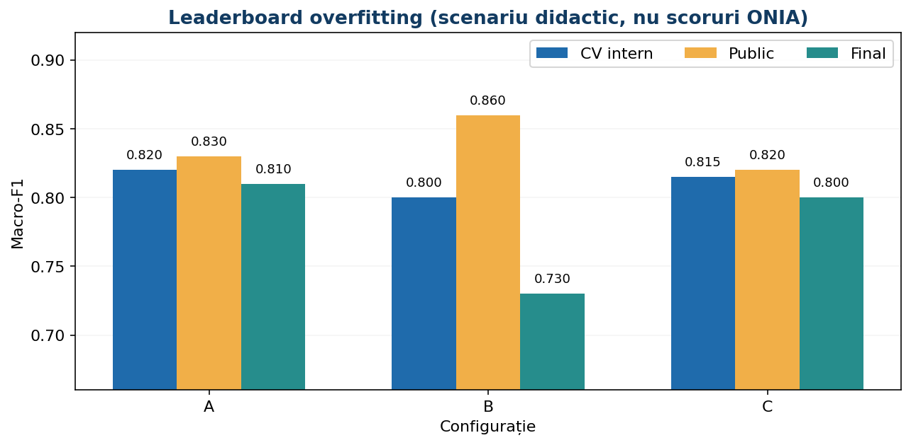

Evaluarea și îmbunătățirea modelelor NLP
Un ghid complet pentru transformarea unui scor într-un experiment corect: metrici, validare, analiză de erori, selecția hiperparametrilor, calibrare și submisii reproductibile.
- Calculează manual TP/FP/FN și F1
- Înțelege de ce Macro-F1 protejează clasele rare
- Construiește evaluarea fără data leakage
- Analizează erorile și optimizează controlat
- Verifică finalizarea și formatul submisiei
1. De ce evaluarea face parte din model
Într-o problemă NLP, un algoritm primește texte și produce răspunsuri: o categorie („sport”), mai multe etichete („educație” și „IA”), un scor numeric sau un clasament de documente. Modelul este util numai dacă răspunsurile sale sunt corecte pe texte nevăzute. Un scor calculat pe datele folosite la antrenare arată cât de bine poate reproduce acele exemple, nu cât de bine generalizează.
De aceea distingem mereu între antrenare, validare și test. Pe antrenare învățăm vocabularul TF-IDF și coeficienții clasificatorului. Pe validare alegem între variante și analizăm erorile. Testul final se folosește o singură dată pentru estimarea performanței; în concurs, etichetele lui sunt ascunse.
Un model care memorează expresiile tipice dintr-un singur site de știri poate avea 98% accuracy intern și să funcționeze slab pe alt site. Problema nu este neapărat algoritmul, ci procedura de evaluare. Întâi stabilim modul de evaluare, apoi comparăm modelele.
2. Ce sarcină evaluăm? Nu există o metrică universală
- Clasificare binară: „spam” / „legitim”; avem o clasă pozitivă și o clasă negativă. Ne interesează adesea și probabilitatea sau scorul modelului.
- Clasificare multiclasă: fiecare document are exact o etichetă, de pildă
dp,graphssaustrings. Metrica Macro-F1 este potrivită când toate clasele contează la fel. - Clasificare multilabel: un document poate fi simultan „educație” și „tehnologie”. Fiecare etichetă este o decizie binară; nu confundăm acest caz cu multiclasă.
- Regresie: prezicem un scor numeric (de exemplu, o estimare a dificultății unui text). Folosim MAE, RMSE, eventual R², nu F1.
- Regăsire de documente: ordonăm răspunsurile pentru o interogare; evaluăm Precision@k, Recall@k, MRR sau nDCG.
O comparație între doi algoritmi este validă numai dacă obiectivul, partițiile și metrica sunt aceleași. Un clasament obținut cu accuracy nu poate fi transformat într-un clasament după Macro-F1 fără evaluare nouă.
3. Matricea de confuzie: instrumentul din care pornesc celelalte metrici

Pentru o problemă binară, matricea are patru celule: TP (pozitiv detectat), FP (falsă alarmă), FN (pozitiv ratat) și TN (negativ respins corect). Să presupunem că un filtru detectează 6 mesaje spam dintre 8 existente, dar marchează și 3 mesaje legitime ca spam. Atunci TP = 6, FN = 2, FP = 3. Dacă avem încă 19 mesaje legitime recunoscute corect, TN = 19.
Pentru clasificarea multiclasă, rândurile reprezintă etichetele reale, iar coloanele predicțiile. Diagonala conține clasificările corecte; o celulă din afara diagonalei arată o confuzie concretă între două categorii. Într-o problemă cu cinci tipuri de algoritmi, putem observa că modelele confundă frecvent dp cu graphs, deși accuracy totală pare bună.
În lecție și în laborator poți modifica celulele unei matrici și vedea instant ce se schimbă. Analiza matricei are valoare educațională mai mare decât memorarea unui singur procent.
4. Precision și Recall: două întrebări diferite
Precision întreabă: „Dintre toate documentele declarate pozitive, câte chiar sunt pozitive?” Formula este TP / (TP + FP). Recall întreabă: „Dintre toate documentele pozitive existente, câte am găsit?” Formula este TP / (TP + FN).
În exemplul spamului: precision = 6 / (6 + 3) = 0,667; recall = 6 / (6 + 2) = 0,75. Un filtru foarte agresiv poate avea recall ridicat, dar poate bloca și e-mailuri legitime. Pentru un sistem de găsire a mesajelor urgente, s-ar putea prefera recall mai mare; pentru ștergerea automată de documente, false positives pot costa mult.
Este o greșeală să spunem că o metrică este „mai bună” în general. Alegerea depinde de costul erorilor și de regulamentul problemei.
5. F1: media armonică și calculul manual
F1 combină precision și recall prin media armonică: F1 = 2 × Precision × Recall / (Precision + Recall). O formulă echivalentă și foarte utilă este F1 = 2TP / (2TP + FP + FN). Dacă precision = 0,667 și recall = 0,75, rezultă aproximativ F1 = 0,706.
F1 nu folosește explicit TN. De aceea este deosebit de utilă când clasa pozitivă este importantă sau rară, dar trebuie completată cu metrici adecvate sarcinii. Dacă modelul nu prezice niciun pozitiv, precision poate fi nedefinit; în scikit-learn alegem în mod explicit politica zero_division=0 pentru exerciții reproductibile.
Capcană de calcul: F1 nu este media aritmetică (Precision + Recall)/2. Iar la multiclasă, Macro-F1 este media F1-urilor pe clase, nu F1 calculat din mediile precision și recall.
6. Accuracy vs Macro-F1: când un procent impresionant înșală

Imaginează-ți 100 de documente, dintre care 90 sunt „sport” și 10 „tehnologie”. Modelul care răspunde întotdeauna „sport” are accuracy = 90%. Dar F1 pentru „tehnologie” este 0, în timp ce F1 pentru „sport” este 180/190 ≈ 0,947. Macro-F1 este aproximativ 0,474.
Concluzia: un model banal poate părea foarte bun dacă urmărești numai accuracy. În seturi de date dezechilibrate, Macro-F1, recall per clasă și matricea de confuzie oferă o imagine mult mai utilă.
Un alt exemplu: la moderarea mesajelor, dacă 98% sunt legitime, modelul care nu detectează niciodată conținut problematic are 98% accuracy, dar recall pentru clasa problematică este zero.
7. Micro-F1, Macro-F1 și Weighted-F1: trei moduri corecte, trei întrebări
Pentru fiecare clasă c, calculăm F1_c tratând acea clasă drept pozitivă și toate celelalte drept negative. Apoi alegem cum agregăm.
Macro-F1 este media aritmetică a valorilor F1_c: fiecare clasă contribuie egal, indiferent cât de rară este. Weighted-F1 folosește drept ponderi numărul de exemple reale din fiecare clasă (support), astfel încât clasele mari cântăresc mai mult. Micro-F1 adună toate TP, FP și FN înainte de a calcula formula; în clasificarea multiclasă cu o singură etichetă și toate clasele incluse, Micro-F1 este egal cu accuracy.
Folosește Macro-F1 când regulamentul ONIA îl cere sau când clasele rare au importanță egală. Folosește weighted-F1 pentru o imagine orientată spre distribuția reală a datelor, dar verifică separat clasele rare. Pentru multilabel, average="samples" calculează pe documente și apoi face media — nu este același lucru cu average="macro".
8. Studiu de caz ONIA 266: Legenda lui Algorel
În problema ONIA 266, documentele sunt enunțuri de probleme algoritmice și modelul trebuie să aleagă o singură clasă dintre dp, geometry, graphs, number theory și strings. Problema pune la dispoziție câmpuri precum title, description, statement, input_format, output_format, time_limit, memory_limit și rating. Metrica de evaluare este Macro-F1.
Aceasta schimbă modul de lucru: dacă geometry este o clasă mai rară, nu o putem ignora doar pentru că accuracy rămâne ridicată. Vom studia matricea de confuzie și F1 pe fiecare dintre cele cinci categorii. Putem testa TF-IDF din title + description + statement, n-grame și modele liniare, dar numai în validare corectă.
Important: exemplele numerice și scorurile din această lecție sunt demonstrative. Ele nu sunt rezultate obținute pe fișierele oficiale ale problemei. Metrica de concurs și transformarea ei în punctaj sunt două lucruri distincte; pentru optimizarea modelului folosim scoring="f1_macro", nu formula punctajului de concurs.
9. De ce separăm train, validation și test înainte de vectorizare
Să presupunem că în setul de validare există termenul rar dijkstra, absent din antrenare. Dacă aplici TfidfVectorizer.fit_transform() pe întreaga colecție înainte de împărțire, vocabularul și valorile IDF folosesc informații din validare. Acesta este data leakage: modelul „știe” ceva despre distribuția datelor pe care trebuia să nu le fi văzut.
Corect: mai întâi separăm documentele, apoi construim un Pipeline cu vectorizarea și clasificatorul. Într-un fold de cross-validation, metoda fit se aplică numai pe exemplele de antrenare ale foldului, iar transform pe cele de validare. La clasificare text, aceasta este o sursă frecventă de erori de evaluare, fiindcă vectorizatorul pare la prima vedere o operație neutră.
10. Duplicate, surse, autori și grupuri: ce înseamnă independența exemplelor
Două documente aproape identice pot apărea cu titluri ușor diferite, într-o traducere sau în republicări. Dacă un articol și copia lui apar în train și validation, modelul poate memora formularea. Uneori nici train_test_split(stratify=y) nu rezolvă problema: acesta păstrează proporțiile claselor, dar nu izolează documentele din aceeași sursă.
Când există grupuri reale (același autor, aceeași familie de probleme, același document-sursă), putem folosi GroupKFold sau StratifiedGroupKFold. Prima schemă asigură că un grup nu apare în train și validation simultan; a doua încearcă și să păstreze distribuția claselor, fără a garanta stratificare perfectă.
Este o alegere care se face pe baza mecanismului de generare a datelor, nu după scorul care ne convine. În practică, merită comparate validarea aleatorie și validarea pe grupuri pentru a înțelege câtă „memorare” era ascunsă în scor.
11. K-fold cross-validation și StratifiedKFold pas cu pas

În 5-fold CV împărțim datele în cinci părți. La fiecare iterație, antrenăm pe patru părți și evaluăm pe a cincea. Obținem cinci scoruri, apoi calculăm media și dispersia lor. De exemplu: 0,78, 0,82, 0,74, 0,80, 0,76 → media 0,78.
Pentru clasificare, StratifiedKFold păstrează aproximativ proporția claselor în fiecare fold, util mai ales când unele clase sunt rare. n_splits trebuie să fie compatibil cu numărul de exemple din fiecare clasă; nu poți construi cinci folduri stratificate dacă o clasă are doar trei exemple. Folosește shuffle=True împreună cu random_state pentru reproductibilitate.
Cross-validation nu este un test final independent dacă l-ai folosit și pentru selectarea hiperparametrilor. Dacă vrei o estimare nepărtinitoare după selecție, păstrează un test izolat sau folosește nested CV în situații cu date puține.
12. Pipeline: cum prevenim scurgerile de informație fără cod complicat
Un Pipeline leagă transformările și modelul. Într-un proiect NLP clasic, forma naturală este TfidfVectorizer → LogisticRegression sau TfidfVectorizer → LinearSVC. Nu mai avem nevoie să efectuăm manual fit_transform pe tot corpusul.
Avantajul nu este doar comoditatea: în cross-validation, pentru fiecare fold se construiește un vocabular nou pe trainul foldului. La predicție, se aplică același vocabular și aceleași valori IDF învățate. În lecțiile anterioare ai văzut parametrii vectorizatorilor; aici îi testăm în cadrul unei evaluări corecte.
13. Ce optimizăm: înțelegerea lui GridSearchCV în perechi de parametri
Scenariul A: mesajele conțin negații. Comparăm tfidf__ngram_range=(1,1) cu (1,2) pentru că bigramele pot surprinde expresii precum „nu recomand”. Nu are sens să extindem automat până la 5-grame pe un corpus minuscul: crește sparsitatea și riscul de supraînvățare.
Scenariul B: clasele sunt dezechilibrate. Comparăm clf__class_weight=None cu "balanced" pentru un model care acceptă parametrul și urmărim Macro-F1 și erorile pe clase. Ponderarea poate crește recall pentru clase rare, dar poate scădea precision.
Scenariul C: modelul este prea rigid sau prea instabil. Testăm clf__C pe scară logaritmică, de exemplu 0.1, 1, 10: un C mai mic înseamnă regularizare mai puternică la regresia logistică și LinearSVC. Pentru MultinomialNB, parametrul relevant nu este C, ci alpha, care controlează netezirea numărărilor.
GridSearchCV combină valorile din param_grid, antrenează fiecare configurație în fiecare fold și alege după scoring. refit=True reantrenează configurația selectată pe toate datele transmise în fit. n_jobs=-1 poate accelera, dar crește consumul de memorie. return_train_score=True ajută la diagnosticare, însă dublează uneori costul evaluării.
14. Cum citim rezultatele GridSearchCV fără să alergăm după 0,001
Un rezultat precum Macro-F1 0,812 ± 0,031 nu este în mod convingător superior lui 0,807 ± 0,029. Variația între folduri, sursele documentelor și mărimea validării pot explica diferența. În loc să alegem automat modelul cu zecimala cea mai mare, comparăm și complexitatea, stabilitatea pe clase, timpul de execuție și erorile concrete.
cv_results_ conține, pentru fiecare configurație, mean_test_score, std_test_score, rank_test_score și timpul de antrenare. Acest tabel este util ca instrument de diagnostic, nu ca listă de parametri de memorat. În laborator vei vedea cum se poate schimba clasamentul dacă unul dintre folduri este mai greu.
15. Analiza erorilor: de la „a greșit” la „de ce a greșit?”
După antrenare, extrage documentele cu y_true != y_pred. Pentru fiecare notează clasa reală, predicția, textul, sursa și eventual scorurile modelului. Caută tipare: negații, prescurtări, cuvinte rare, formate HTML, documente foarte scurte, termenii unei alte limbi sau etichete ambigue.
O metodă practică este să sortezi erorile pe perechi de clase: graphs → dp, number theory → dp, geometry → graphs. Pentru fiecare pereche, citește câteva exemple și formulază o ipoteză testabilă. De exemplu: „Modelul confundă grafurile cu DP atunci când enunțul menționează «states»; poate ajuta combinația titlu + enunț și n-gramele”. Testează schimbarea pe validare, nu doar pe exemplele pe care tocmai le-ai inspectat.
16. Curbe de învățare și diagnosticarea underfittingului / overfittingului
Dacă scorul pe antrenare și cel pe validare sunt ambele mici, modelul poate suferi de underfitting: caracteristici insuficiente, regularizare prea puternică sau etichete incoerente. Dacă antrenarea este foarte bună, iar validarea slabă, suspectăm overfitting, duplicate, vocabular prea bogat sau documente prea asemănătoare doar pe train.
Curba de învățare se construiește evaluând modele pe cantități crescătoare de date de antrenare. Dacă scorurile de train și validation se apropie la o performanță modestă, poate fi nevoie de o reprezentare mai bună. Dacă diferența rămâne mare, mai multe date sau regularizarea pot ajuta. Nu există o cauză unică: verificăm și calitatea etichetelor.
17. Praguri, probabilități, Precision–Recall și costuri diferite

Un model binar care produce probabilitatea clasei pozitive de 0,63 poate prezice pozitiv la pragul 0,5, dar negativ la 0,7. Schimbarea pragului nu reantrenează modelul; modifică doar regula de decizie. Când vrem recall mai mare pentru o clasă rară, un prag mai mic poate ajuta, dar crește adesea numărul falselor alarme.
Alegem pragul pe setul de validare sau prin CV dedicat, nu pe setul folosit la antrenarea modelului și nici pe testul final. În bibliotecile recente, TunedThresholdClassifierCV automatizează această etapă pentru clasificarea binară; verifică versiunea instalată. LinearSVC oferă decision_function, nu probabilități calibrate; dacă ai nevoie de probabilități, poți utiliza calibrare cu date separate.
Pentru evaluare la mai multe praguri, curba Precision–Recall este adesea mai informativă decât ROC când clasa pozitivă este foarte rară. Totuși, criteriul final rămâne metrica și costul erorilor din problemă.
18. Calibrarea probabilităților: scor de încredere ≠ adevăr statistic
Dacă un model produce predict_proba = 0,8 pentru 100 de documente, iar aproximativ 80 dintre ele sunt efectiv pozitive, estimările sunt bine calibrate pe acel grup. Un model poate clasifica bine, dar poate fi prea încrezător sau prea prudent. Acest lucru contează când alegem praguri, facem pseudoetichetare ori combinăm modele.
Poți verifica calibrarea grupând documentele după probabilitatea prezisă și comparând media scorurilor cu proporția reală de pozitive. CalibratedClassifierCV poate ajuta, dar introducerea lui implică un nou pas de validare și risc de supraînvățare dacă datele sunt puține. Nu interpreta scorurile decision_function ca probabilități.
19. Regresie pe texte: MAE, MSE, RMSE și R²
Când prezici un scor numeric, ai nevoie de metrici de regresie. MAE este media valorilor absolute ale erorilor; este ușor de interpretat în unitățile scorului. MSE ridică erorile la pătrat, penalizând mai puternic greșelile mari. RMSE este rădăcina MSE și revine la unitatea originală. R² compară modelul cu predicția constantă dată de media țintelor și poate fi negativ.
Spre exemplu, pentru valori reale [2, 4, 6] și predicții [3, 5, 3], erorile absolute sunt [1, 1, 3]. MAE este 5/3 ≈ 1,667, iar RMSE este sqrt(11/3) ≈ 1,915. Pentru un model TfidfVectorizer + Ridge, selectăm alpha prin CV cu scoring="neg_mean_absolute_error" sau altă metrică corespunzătoare cerinței.
20. Evaluare multilabel și regăsire: precizăm ce înseamnă o predicție corectă
La multilabel, un document poate avea simultan etichetele IA, educație și sport. Putem raporta Micro-F1, Macro-F1, F1 pe fiecare etichetă și subset accuracy — ultima cere ca toate etichetele documentului să fie corecte, fiind mult mai strictă. Un model poate avea un F1 bun și o subset accuracy modestă.
La căutare de documente, evaluarea este diferită: Precision@5 întreabă câte dintre primele cinci rezultate sunt relevante; Recall@5 câte dintre toate documentele relevante au fost găsite între primele cinci; MRR ține cont de poziția primului răspuns corect. Nu optimizăm direct accuracy pentru un clasament de căutare.
21. Scor public, scor final și selecția responsabilă a experimentelor

Imaginează-ți trei modele: A are validare internă 0,82, public 0,83, final 0,81; B are intern 0,80, public 0,86, final 0,73; C are intern 0,815, public 0,82, final 0,80. Acestea sunt numere didactice inventate, nu rezultate dintr-o competiție. Dacă am alege B doar pentru scorul public, am putea rata un model mai robust.
Un protocol bun este: stabilești dinainte metrica, păstrezi un jurnal cu modificările, alegi după CV și setul intern de validare, verifici erorile pe clase și folosești leaderboardul public doar ca semnal complementar. Nu testezi sute de variante până când un subset mic de test pare „fericit”: selecția repetată introduce overfitting la nivelul procesului de experimentare.
22. De la evaluare la fișierul final: un checklist reproductibil
Înainte de submisie: verifică faptul că ai aceleași coloane și aceeași ordine de ID-uri ca în cerință, că etichetele sunt numai din lista permisă, că nu ai valori lipsă, că transformările au fost învățate doar pe date permise și că fiecare document primește exact ieșirea cerută.
În problema ONIA 266, formatul solicitat este un CSV cu coloanele id,label, iar fiecare rând trebuie să conțină o singură categorie. Nu deduce ordinea dintr-o sortare accidentală: asociază explicit predicțiile cu id-urile originale.
Păstrează un mic jurnal al experimentelor: versiunea de date, parametrii vectorizatorului, modelul, seed-ul, metricile CV, observațiile despre erori. Acest obicei este aproape la fel de important ca alegerea clasificatorului.
Laboratorul 5.11 — Evaluare în practică
Șase experimente interactive: Macro-F1 multiclasă, clase dezechilibrate, praguri și costuri, împărțiri de validare, căutarea hiperparametrilor și scor public/final. Poți modifica datele și compara rezultatele pe date demonstrative.
Deschide laboratorul într-o pagină nouă ↗Exemple Python — de la calcule manuale la evaluarea unui model complet
Exemplele sunt independente: fiecare poate fi copiat și rulat separat. Primele folosesc numai Python standard, apoi introducem biblioteci. Pentru fișierele create, exemplele folosesc date sintetice și nume de fișiere locale.
Exemplul 1. Matrice de confuzie și metrici binare de la zero
reale = [1, 1, 0, 1, 0, 0, 1, 0, 0, 1] prezise = [1, 0, 1, 1, 0, 0, 1, 0, 0, 0] tp = fp = tn = fn = 0 for y, p in zip(reale, prezise): if y == 1 and p == 1: tp += 1 elif y == 0 and p == 1: fp += 1 elif y == 0 and p == 0: tn += 1 else: fn += 1 precision = tp / (tp + fp) if tp + fp else 0 recall = tp / (tp + fn) if tp + fn else 0 f1 = 2 * tp / (2 * tp + fp + fn) if 2 * tp + fp + fn else 0 print("TP, FP, TN, FN:", tp, fp, tn, fn) print(f"Precision={precision:.3f}, Recall={recall:.3f}, F1={f1:.3f}")
Explicație: cele patru contoare parcurg fiecare pereche (real, prezis) o singură dată. Nu trebuie să memorăm o funcție sofisticată: totul pornește de la această tabelare. Protecția la numitor zero evită o împărțire invalidă.
Exemplul 2. Macro-F1 de la zero, pentru trei clase
reale = ["sport", "sport", "sport", "tech", "tech", "educatie", "educatie"] prezise = ["sport", "tech", "sport", "tech", "sport", "educatie", "tech"] clase = ["sport", "tech", "educatie"] f1_clase = [] for c in clase: tp = sum(y == c and p == c for y, p in zip(reale, prezise)) fp = sum(y != c and p == c for y, p in zip(reale, prezise)) fn = sum(y == c and p != c for y, p in zip(reale, prezise)) scor = 2 * tp / (2 * tp + fp + fn) if 2 * tp + fp + fn else 0.0 print(c, "TP=", tp, "FP=", fp, "FN=", fn, "F1=", round(scor, 3)) f1_clase.append(scor) print("Macro-F1 =", sum(f1_clase) / len(f1_clase))
Explicație: tratăm fiecare clasă pe rând ca pozitivă. La final facem media aritmetică a celor trei F1, indiferent de câte exemple are fiecare clasă.
Exemplul 3. Comparația macro, micro, weighted cu scikit-learn
from sklearn.metrics import accuracy_score, classification_report, f1_score reale = ["sport"] * 18 + ["tech"] * 2 prezise = ["sport"] * 20 # model trivial: nu prezice niciodată tech print("Accuracy:", accuracy_score(reale, prezise)) for avg in ["macro", "micro", "weighted"]: print(avg, f1_score(reale, prezise, average=avg, zero_division=0)) print(classification_report(reale, prezise, zero_division=0))
De ce contează: modelul are accuracy = 0,90, dar ignoră complet clasa rară. În raport, urmărește și coloana support; aceasta este numărul de exemple reale, nu numărul de predicții.
Exemplul 4. Matricea de confuzie multiclasă și ordinea etichetelor
from sklearn.metrics import confusion_matrix, ConfusionMatrixDisplay import matplotlib.pyplot as plt clase = ["dp", "geometry", "graphs", "number theory", "strings"] y_true = ["dp", "graphs", "strings", "dp", "geometry", "graphs", "number theory"] y_pred = ["dp", "dp", "strings", "graphs", "geometry", "graphs", "strings"] mat = confusion_matrix(y_true, y_pred, labels=clase) print(mat) ConfusionMatrixDisplay(mat, display_labels=clase).plot(cmap="Blues", xticks_rotation=40) plt.tight_layout() plt.show()
Explicație: argumentul labels=clase fixează ordinea rândurilor și coloanelor. La problemele de concurs este important să incluzi explicit toate clasele posibile, chiar dacă într-o partiție unele apar rar.
Exemplul 5. Validare stratificată: ce exemple intră în fiecare fold
from sklearn.model_selection import StratifiedKFold y = ["sport"] * 6 + ["tech"] * 6 + ["educatie"] * 6 cv = StratifiedKFold(n_splits=3, shuffle=True, random_state=42) for nr, (train, val) in enumerate(cv.split(list(range(len(y))), y), 1): print(f"Fold {nr}: train={len(train)} validation={len(val)}") for clasa in sorted(set(y)): print(" ", clasa, "train=", sum(y[i] == clasa for i in train), "val=", sum(y[i] == clasa for i in val))
Explicație: aici observăm direct că fiecare fold de validare conține câte două exemple din fiecare clasă. În practică, random_state face împărțirea repetabilă.
Exemplul 6. De ce TF-IDF se antrenează numai pe train
from sklearn.feature_extraction.text import TfidfVectorizer train = ["tenis sport meci", "python algoritm cod"] validare = ["dijkstra graf ponderat"] vectorizer = TfidfVectorizer() X_train = vectorizer.fit_transform(train) X_val = vectorizer.transform(validare) # NU fit_transform! print("Vocabular învățat:", vectorizer.get_feature_names_out().tolist()) print("Forme:", X_train.shape, X_val.shape) print("Vectorul de validare are", X_val.nnz, "elemente nenule")
Explicație: termenii noi din validare nu apar în vocabularul învățat pe train, deci documentul devine vector zero în acest exemplu. Acesta este comportamentul corect al unei reprezentări lexicale: transformarea nu poate „învăța” din documentul pe care îl evaluezi. În practică, putem compara n-gramele de caractere pentru robustețe.
Exemplul 7. Pipeline TF-IDF + LinearSVC cu predicții și raport
from sklearn.pipeline import Pipeline from sklearn.feature_extraction.text import TfidfVectorizer from sklearn.svm import LinearSVC from sklearn.metrics import classification_report X_train = [ "tenis meci sport", "fotbal stadion sport", "meci echipa fotbal", "finala tenis sport", "python program cod", "algoritm programare cod", "python date algoritm", "program python dezvoltare" ] y_train = ["sport"] * 4 + ["tech"] * 4 X_val = ["meci stadion tenis", "cod programare python"] y_val = ["sport", "tech"] model = Pipeline([ ("tfidf", TfidfVectorizer(ngram_range=(1, 2))), ("clf", LinearSVC(C=1.0, random_state=0)) ]) model.fit(X_train, y_train) pred = model.predict(X_val) print("Predicții:", pred.tolist()) print(classification_report(y_val, pred, labels=["sport", "tech"], zero_division=0))
Explicație: Pipeline nu este un simplu artificiu de sintaxă. El garantează folosirea acelorași reguli de vectorizare la fit, predict și cross-validation. LinearSVC este un baseline bun pentru TF-IDF sparse și clasificare de texte.
Exemplul 8. Cross-validation corect al întregului Pipeline
from sklearn.pipeline import Pipeline from sklearn.feature_extraction.text import TfidfVectorizer from sklearn.linear_model import LogisticRegression from sklearn.model_selection import StratifiedKFold, cross_val_score X = (["meci tenis sport", "fotbal stadion sport", "turneu sport echipa", "finala tenis", "sport meci final", "echipa fotbal meci"] + ["python cod algoritm", "programare date python", "algoritm cod executie", "python analiza date", "program cod functie", "biblioteca python cod"]) y = [0] * 6 + [1] * 6 model = Pipeline([ ("tfidf", TfidfVectorizer()), ("clf", LogisticRegression(max_iter=1000)) ]) cv = StratifiedKFold(n_splits=3, shuffle=True, random_state=7) scoruri = cross_val_score(model, X, y, cv=cv, scoring="f1_macro") print("F1 pe folduri:", scoruri.round(3)) print("Media:", round(float(scoruri.mean()), 3))
Explicație: la fiecare fold, biblioteca recreează transformarea și modelul pe subsetul de antrenare. Nu pregăti X_tfidf înaintea lui cross_val_score.
Exemplul 9. GroupKFold împiedică trecerea aceleiași surse în ambele partiții
from sklearn.model_selection import GroupKFold texte = ["stire A", "titlu A modificat", "stire B", "titlu B modificat", "stire C", "titlu C modificat", "stire D", "titlu D modificat"] grupuri = ["A", "A", "B", "B", "C", "C", "D", "D"] cv = GroupKFold(n_splits=4) for nr, (train, val) in enumerate(cv.split(texte, groups=grupuri), 1): g_train = {grupuri[i] for i in train} g_val = {grupuri[i] for i in val} assert g_train.isdisjoint(g_val) print(nr, "grupuri train:", sorted(g_train), "validare:", sorted(g_val))
Explicație: fiecare articol și republicarea lui păstrează aceeași identificare de grup. Grupurile, nu documentele individuale, sunt unitățile care trec dintr-un fold în altul.
Exemplul 10. GridSearchCV: n-grame și regularizarea C
from sklearn.model_selection import GridSearchCV, StratifiedKFold from sklearn.pipeline import Pipeline from sklearn.feature_extraction.text import TfidfVectorizer from sklearn.linear_model import LogisticRegression X = [ "meci fotbal sport", "tenis turneu sport", "fotbal finala stadion", "sport echipa meci", "turneu tenis finala", "stadion echipa fotbal", "python cod algoritm", "programare python cod", "analiza date python", "functie algoritm cod", "biblioteca python date", "cod programare functie" ] y = ["sport"] * 6 + ["tech"] * 6 pipe = Pipeline([ ("tfidf", TfidfVectorizer()), ("clf", LogisticRegression(max_iter=1000)) ]) grid = GridSearchCV( pipe, param_grid={"tfidf__ngram_range": [(1, 1), (1, 2)], "clf__C": [0.1, 1.0, 10.0]}, cv=StratifiedKFold(3, shuffle=True, random_state=0), scoring="f1_macro", refit=True ) grid.fit(X, y) print("Parametrii aleși:", grid.best_params_) print("F1 mediu CV:", round(grid.best_score_, 3))
Explicație: prefixul tfidf__ sau clf__ identifică etapa din Pipeline. Sunt șase configurații și trei folduri, deci 18 antrenări pentru comparație, urmate de un refit pe toate cele 12 documente.
Exemplul 11. Inspectarea lui cv_results_ și diferențele mici
import pandas as pd date = pd.DataFrame({ "configuratie": ["unigrame, C=0.1", "bigrame, C=1", "bigrame, C=10"], "mean_test_score": [0.802, 0.812, 0.807], "std_test_score": [0.025, 0.031, 0.029] }) date = date.sort_values("mean_test_score", ascending=False) print(date.to_string(index=False)) print("Diferența între primele două:", round( date.iloc[0]["mean_test_score"] - date.iloc[1]["mean_test_score"], 3))
Explicație: valorile sunt ilustrative. O diferență de 0,005 este mică în raport cu variația între folduri; nu justifică singură concluzia că o configurație este net superioară. Într-un experiment real, citești aceleași coloane din grid.cv_results_.
Exemplul 12. Analiza erorilor: extragem doar textele greșite
texte = ["meci pe stadion", "algoritm de graf", "programare dinamica", "numere prime", "distanta dintre puncte", "siruri de caractere"] y_true = ["sport", "graphs", "dp", "number theory", "geometry", "strings"] y_pred = ["sport", "dp", "dp", "dp", "geometry", "graphs"] for i, (text, real, pred) in enumerate(zip(texte, y_true, y_pred)): if real != pred: print(f"#{i} real={real} pred={pred} | {text}")
Explicație: după identificarea erorilor putem grupa exemplele după (real, prezis) și inspecta termeni specifici. Nu schimbăm modelul doar pentru a repara o propoziție văzută în validare.
Exemplul 13. Interpretarea coeficienților unui model liniar
from sklearn.pipeline import Pipeline from sklearn.feature_extraction.text import TfidfVectorizer from sklearn.linear_model import LogisticRegression import numpy as np texte = ["tenis sport meci", "fotbal stadion sport", "turneu sport tenis", "python cod algoritm", "programare python date", "cod algoritm date"] y = [0, 0, 0, 1, 1, 1] model = Pipeline([ ("tfidf", TfidfVectorizer()), ("clf", LogisticRegression(max_iter=1000)) ]).fit(texte, y) termeni = model.named_steps["tfidf"].get_feature_names_out() coef = model.named_steps["clf"].coef_[0] pozitii = np.argsort(coef) print("Sport:", [(termeni[i], round(float(coef[i]), 3)) for i in pozitii[:3]]) print("Tehnologie:", [(termeni[i], round(float(coef[i]), 3)) for i in pozitii[-3:]])
Explicație: un coeficient pozitiv împinge scorul spre clasa 1, unul negativ spre clasa 0. Nu este o afirmație cauzală despre cuvânt, ci despre influența lui în modelul antrenat pe acest corpus.
Exemplul 14. Alegerea pragului pe o validare dedicată
from sklearn.metrics import f1_score reale = [1, 1, 0, 1, 0, 0, 1, 0, 1, 0] probabilitati = [0.94, 0.75, 0.72, 0.62, 0.55, 0.48, 0.44, 0.31, 0.26, 0.12] rezultate = [] for prag in [0.3, 0.4, 0.5, 0.6, 0.7]: prezise = [int(p >= prag) for p in probabilitati] f1 = f1_score(reale, prezise, zero_division=0) rezultate.append((f1, prag)) print(f"prag={prag:.1f}, F1={f1:.3f}") print("Cel mai bun prag de validare:", max(rezultate))
Explicație: listele din exemplu reprezintă scoruri și etichete de validare, nu predicții pe train. Pragul rezultat trebuie verificat ulterior pe date complet separate; maximizarea repetată pe aceeași validare poate conduce la overfitting.
Exemplul 15. Calibrarea empirică a probabilităților pe intervale
scoruri = [0.05, 0.12, 0.18, 0.27, 0.38, 0.44, 0.62, 0.75, 0.85, 0.94] etichete = [0, 0, 0, 1, 0, 1, 1, 1, 0, 1] for st, dr in [(0, 0.3), (0.3, 0.7), (0.7, 1.01)]: indicii = [i for i, p in enumerate(scoruri) if st <= p < dr] daca = len(indicii) if daca: medie_predictii = sum(scoruri[i] for i in indicii) / daca proportie_reala = sum(etichete[i] for i in indicii) / daca print(f"[{st:.1f}, {dr:.1f}): probabilitate medie {medie_predictii:.3f};" f" frecvență reală {proportie_reala:.3f}")
Explicație: pe date reale, calibrarea se evaluează pe multe exemple și cu intervale atent alese. Acest mini-exemplu arată mecanismul, nu certifică un model ca fiind calibrat.
Exemplul 16. Curba de învățare pentru un Pipeline NLP
from sklearn.model_selection import learning_curve, StratifiedKFold from sklearn.pipeline import Pipeline from sklearn.feature_extraction.text import TfidfVectorizer from sklearn.linear_model import LogisticRegression import numpy as np X = (["tenis sport meci", "sport finala tenis", "fotbal stadion meci", "echipa sport fotbal", "turneu sport tenis", "finala meci stadion", "fotbal meci echipa", "sport tenis finala", "meci sport echipa"] + ["python cod algoritm", "algoritm date python", "programare functie cod", "date programare python", "python analiza cod", "functie algoritm programare", "date cod biblioteca", "python functie programare", "algoritm python date"]) y = [0] * 9 + [1] * 9 model = Pipeline([("tfidf", TfidfVectorizer()), ("clf", LogisticRegression(max_iter=1000))]) sizes, train, valid = learning_curve( model, X, y, train_sizes=[0.5, 0.75, 1.0], cv=StratifiedKFold(3, shuffle=True, random_state=42), scoring="f1_macro" ) for n, tr, va in zip(sizes, train.mean(axis=1), valid.mean(axis=1)): print(f"{n:2d} exemple/fold | train={tr:.3f}, validation={va:.3f}")
Explicație: pe un corpus atât de mic, curba nu oferă concluzii stabile; scopul este să înțelegi cum se calculează. Pe un set mare, diferența persistentă train–validation poate indica overfitting.
Exemplul 17. Regresie pe texte și metrici corecte
from sklearn.pipeline import Pipeline from sklearn.feature_extraction.text import TfidfVectorizer from sklearn.linear_model import Ridge from sklearn.metrics import mean_absolute_error, mean_squared_error, r2_score import numpy as np X_train = ["text simplu", "cuvinte usoare", "exemplu elementar", "graf drumuri scurte", "programare dinamica complexa", "teorie avansata grafuri"] y_train = [1.0, 1.2, 1.1, 3.0, 4.5, 4.0] X_val = ["exemplu simplu", "graf complex"] y_val = [1.2, 3.7] model = Pipeline([("tfidf", TfidfVectorizer()), ("ridge", Ridge(alpha=1.0))]) model.fit(X_train, y_train) pred = model.predict(X_val) print("MAE:", mean_absolute_error(y_val, pred)) print("RMSE:", np.sqrt(mean_squared_error(y_val, pred))) print("R²:", r2_score(y_val, pred))
Explicație: aici regresia are doar două observații de validare, deci R² este extrem de instabil. Pentru concluzii reale ar trebui mult mai multe exemple și, ideal, validare repetată. Nu calculăm F1 pentru ținte numerice continue.
Exemplul 18. Clasificare multilabel: mai multe valori pentru F1
from sklearn.metrics import f1_score, accuracy_score y_true = [[1, 0, 1], [0, 1, 0], [1, 1, 0], [0, 0, 1]] y_pred = [[1, 0, 0], [0, 1, 0], [1, 0, 1], [0, 0, 1]] print("Micro-F1:", f1_score(y_true, y_pred, average="micro", zero_division=0)) print("Macro-F1:", f1_score(y_true, y_pred, average="macro", zero_division=0)) print("Samples-F1:", f1_score(y_true, y_pred, average="samples", zero_division=0)) print("Subset accuracy:", accuracy_score(y_true, y_pred))
Explicație: samples-F1 face media F1-ului calculat pe fiecare document. Subset accuracy cere să fie corecte simultan toate etichetele documentului. Acest nivel de strictețe este diferit de Macro-F1 pe etichete.
Exemplul 19. Jurnalizarea experimentelor fără dependențe externe
import csv experimente = [ {"model": "TF-IDF + LinearSVC", "ngrame": "1-1", "C": 1.0, "f1_macro_cv": 0.81}, {"model": "TF-IDF + LinearSVC", "ngrame": "1-2", "C": 1.0, "f1_macro_cv": 0.82}, {"model": "TF-IDF + LogisticRegression", "ngrame": "1-2", "C": 0.1, "f1_macro_cv": 0.80}, ] with open("experimente_demo.csv", "w", encoding="utf-8", newline="") as f: writer = csv.DictWriter(f, fieldnames=list(experimente[0])) writer.writeheader() writer.writerows(experimente) print("Jurnal salvat:", len(experimente), "configurații")
Explicație: acestea sunt scoruri inventate pentru exemplificarea jurnalului, nu măsurători din concurs. Un jurnal mai avansat poate include data, versiunea datasetului, seed-ul, timpul și observații despre erori.
Exemplul 20. Validarea fișierului CSV pentru ONIA 266
import csv id_uri = ["PROBLEM_0001", "PROBLEM_0002", "PROBLEM_0003"] prezise = ["graphs", "strings", "number theory"] permise = {"dp", "geometry", "graphs", "number theory", "strings"} assert len(id_uri) == len(prezise) assert len(set(id_uri)) == len(id_uri), "ID-uri duplicate" assert all(label in permise for label in prezise), "Etichetă necunoscută" with open("submisie_demo.csv", "w", encoding="utf-8", newline="") as f: writer = csv.writer(f) writer.writerow(["id", "label"]) writer.writerows(zip(id_uri, prezise)) with open("submisie_demo.csv", encoding="utf-8", newline="") as f: randuri = list(csv.DictReader(f)) assert [r["id"] for r in randuri] == id_uri print("Format valid:", randuri)
Explicație: nu este suficient să obții un scor bun. Dacă predicțiile nu respectă ordinea ID-urilor sau formatul cerut, submisia este invalidă. Într-o problemă reală, ID-urile trebuie preluate din fișierul de test, nu inventate ca în acest exemplu.
Documentație și aprofundare
Consultă documentația oficială pentru F1 și agregări, classification_report, GridSearchCV, cross-validation și ajustarea pragului. Studiul de caz este corelat cu Legenda lui Algorel — ONIA 266. Toate cifrele din demonstrații, diagrame și laboratoare sunt educaționale, nu rezultate oficiale.